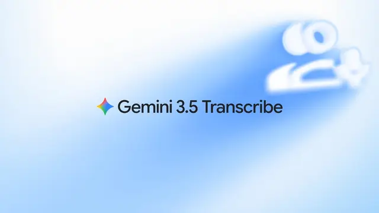

Google / 画像・動画・音声・モデル更新
Google「Gemini 3.5 Transcribe」発表、音声認識をリアルタイムAI操作基盤へ

Googleは2026年8月26日、最新の音声テキスト変換モデル「Gemini 3.5 Transcribe」を発表しました。単なる文字起こしではなく、言い直しやフィラーの除去、専門用語への適応、話者識別、他モデルへの機能呼び出しまで統合し、音声をAIアプリケーションの入力インターフェースへ発展させる設計が特徴です。
QUICK READ
この記事の要点
低遅延ストリーミングと録音処理を分離
開発者向けには2種類のAPIが用意されています。 gemini-3.5-transcribe-live：Live APIを通じて双方向ストリーミングを行い、1秒未満の遅延でリアルタイム音声を処理 gemini-3.5-transcribe：Interactions APIで録音済み音声、会議、通話ログなどを処理し、話者情報や単語単位のタイムスタンプを出力 用途ごとにリアルタイム性と詳細な後処理を分離したことで、音声エージェントから字幕、コール分析まで幅広いシステムへ組み込みやすくなっています。
WERは非ストリーミングで2.6%
Googleによると、Artificial Analysisの測定では平均Word Error Rate（WER、単語誤り率）はストリーミングで4.0%、非ストリーミングで2.6%です。従来モデルChirp 3と比較して最終文字起こしまでの時間も70%改善したとしています。 FLEURSベンチマークでは、主要言語・地域を対象にストリーミング5.50%、非ストリーミング5.04%のWERを記録しています。 さらに85以上の言語を自動検出でき、地域アクセントや方言、音声途中での言語切り替えにも対応します。
「話した通り」ではなく「意図した文章」に変換
Gemini 3.5 Transcribeの重要な特徴は、音声をそのまま文字列へ変換する従来型ASRから踏み込んでいる点です。 「火曜日に会おう、いや水曜日」のような自己訂正を解釈し、「えー」「あー」といったフィラーを除去して文章を整形できます。独自の専門用語や特殊な綴りをカスタム語彙として与えることも可能です。 録音音声では最大3人までの話者識別を正式にサポートし、3人を超える話者については実験的対応としています。
Discord掲載記事からの抜粋です。詳細・文脈は全文と出典をご確認ください。
出典・参考リンク
日付はAFNJPへの掲載日です。発表元の公開日とは異なる場合があります。